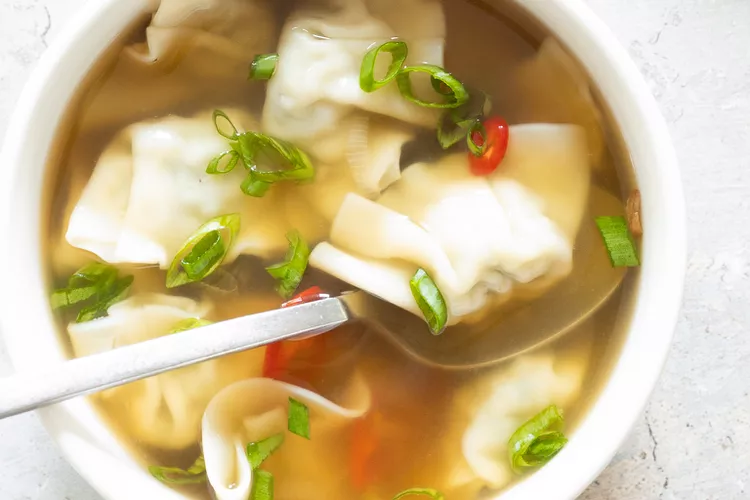

Home
Wonton Soup

Description
A 15 minute no skill meal that is delicious and great for cold nights.
It is endlessly customiseable and is a simple, flavorful soup
Ingredients
- 1 (32-ounce)carton low-sodium chicken broth
- 2 to 3 green onions, white and light green parts sliced (about 1/4 cup),
thinly sliced dark green ends reserved for garnish
- 1 inch piece of ginger, sliced into 5 rounds
- 1 medium clove garlic, minced
- Salt, to taste
- 20 mini chicken (or other) wontons
- Fresh lime juice, to taste
Steps
- Add the chicken broth, green onion, ginger and garlic to a medium pot and bring to a boil over high heat.
Cover with a lid, reduce to low, and simmer for 8 to 10 minutes
- Remove the lid and season with salt, to taste
- Bring the mixture back up to a boil, add frozen wontons to the broth, and cook according to package directions
- Serve immediately with reserved green onions for garnich and your choice of toppings